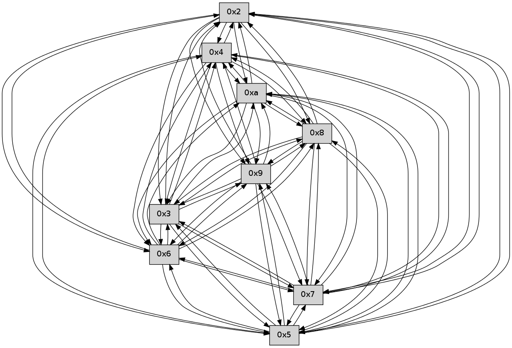

>> << IDX [start] -100 -25 -5 +0 +5 +25 +100 [135.198567152]
 Previous packets
----------------------------------------------------------------------
130.469777 beacon01(faad) #0 coord=01,02,03,04,05,06,07,0a,09,08 cycle=688.0ms assoc
-- color-indic=0 64 ab d1
130.479759 beacon02(faad) #0 coord=01,02,03,04,05,06,07,0a,09,08 cycle=688.0ms assoc 64 38 e0
130.489760 beacon03(faad) #0 coord=01,02,03,04,05,06,07,0a,09,08 cycle=688.0ms assoc 64 42 ad
130.499759 beacon04(faad) #0 coord=01,02,03,04,05,06,07,0a,09,08 cycle=688.0ms assoc 64 35 47
130.509760 beacon05(faad) #0 coord=01,02,03,04,05,06,07,0a,09,08 cycle=688.0ms assoc 64 4f 0a
130.519761 beacon06(faad) #0 coord=01,02,03,04,05,06,07,0a,09,08 cycle=688.0ms assoc 64 c1 dd
130.529761 beacon07(faad) #0 coord=01,02,03,04,05,06,07,0a,09,08 cycle=688.0ms assoc 64 bb 90
130.539765 beacon0a(faad) #0 coord=01,02,03,04,05,06,07,0a,09,08 cycle=688.0ms assoc 64 ca 9b
130.549765 beacon09(faad) #0 coord=01,02,03,04,05,06,07,0a,09,08 cycle=688.0ms assoc 64 44 4c
130.559767 beacon08(faad) #0 coord=01,02,03,04,05,06,07,0a,09,08 cycle=688.0ms assoc 64 3e 01
130.571214 [Hello(9): seq=31 sym=5,2,3,4,7,6,8,10 sysInfo= stat=5:7,0,0,0/2:5,0,0,0/3:2,0,0,0/4:7,0,0,0/7:2,0,0,0/6:3,0,0,0/8:14,0,0,0/10:8,0,0,0]
130.574252 [Hello(2): seq=88 sym=4,5,7,6,3,9,8,10 sysInfo= stat=4:9,0,0,0/5:14,0,0,0/7:7,0,0,0/6:15,0,0,0/3:8,0,0,0/9:5,0,0,0/8:6,0,0,0/10:11,0,0,0]
130.581745 [Hello(3): seq=89 sym=5,7,6,4,2,8,9,10 sysInfo= stat=5:2,0,0,0/7:14,0,0,0/6:5,0,0,0/4:3,0,0,0/2:6,0,0,0/8:5,0,0,0/9:4,0,0,0/10:12,0,0,0]
130.584741 [Hello(4): seq=89 sym=5,7,6,2,3,9,8,10 sysInfo= stat=5:4,0,0,0/7:13,0,0,0/6:8,0,0,0/2:3,0,0,0/3:4,0,0,0/9:7,0,0,0/8:4,0,0,0/10:11,0,0,0]
130.588252 [Hello(5): seq=89 sym=7,6,4,2,3,9,8,10 sysInfo= stat=7:3,0,0,0/6:0,0,0,0/4:1,0,0,0/2:13,0,0,0/3:12,0,0,0/9:6,0,0,0/8:5,0,0,0/10:12,0,0,0]
130.590643 [Hello(10): seq=20 sym=6,3,2,5,9,8,7,4 sysInfo= stat=6:15,0,0,0/3:13,0,0,0/2:12,0,0,0/5:12,0,0,0/9:3,0,0,0/8:8,0,0,0/7:14,0,0,0/4:10,0,0,0]
130.594789 PARSE ERROR************************
Traceback (most recent call last):
File "PacketAnalysis.py", line 167, in showOperaPacket
structPacket = OperaPacketParse.parsePacket(rawPacket)
File "../../pkg-python/HipSens/Core/OperaPacketParse.py", line 461, in parsePacket
return parseHelloMessage(data)
File "../../pkg-python/HipSens/Core/OperaPacketParse.py", line 125, in parseHelloMessage
struct.unpack("!H",linkList[:2])[0])
error: unpack requires a string argument of length 2
48 30 08 00 00 1f 00 02 02 10 05 00 02 00 03 00 04 00 07 00 06 00 09 00 0a 00 53 04 00 00 00 00 4c 10 00 05 00 05 00 05 00 05 00 04 00 06 00 0d 00 09 4d 8b
----------------------------------------------------------------------
131.257908 beacon01(faad) #0 coord=01,02,03,04,05,06,07,0a,09,08 cycle=688.0ms assoc
-- color-indic=0 64 7f e4
131.267889 beacon02(faad) #0 coord=01,02,03,04,05,06,07,0a,09,08 cycle=688.0ms assoc 64 ec d5
131.277890 beacon03(faad) #0 coord=01,02,03,04,05,06,07,0a,09,08 cycle=688.0ms assoc 64 96 98
131.287891 beacon04(faad) #0 coord=01,02,03,04,05,06,07,0a,09,08 cycle=688.0ms assoc 64 e1 72
131.297893 beacon05(faad) #0 coord=01,02,03,04,05,06,07,0a,09,08 cycle=688.0ms assoc 64 9b 3f
131.307890 beacon06(faad) #0 coord=01,02,03,04,05,06,07,0a,09,08 cycle=688.0ms assoc 64 15 e8
131.317892 beacon07(faad) #0 coord=01,02,03,04,05,06,07,0a,09,08 cycle=688.0ms assoc 64 6f a5
131.327896 beacon0a(faad) #0 coord=01,02,03,04,05,06,07,0a,09,08 cycle=688.0ms assoc 64 1e ae
131.337897 beacon09(faad) #0 coord=01,02,03,04,05,06,07,0a,09,08 cycle=688.0ms assoc 64 90 79
131.347896 beacon08(faad) #0 coord=01,02,03,04,05,06,07,0a,09,08 cycle=688.0ms assoc 64 ea 34
131.359675 [Hello(7): seq=89 sym=2,3,5,6,4,8,9,10 sysInfo= stat=2:4,0,0,0/3:15,0,0,0/5:14,0,0,0/6:2,0,0,0/4:14,0,0,0/8:3,0,0,0/9:5,0,0,0/10:1,0,0,0]
131.364295 [Hello(6): seq=89 sym=2,3,5,4,7,9,8,10 sysInfo= stat=2:12,0,0,0/3:14,0,0,0/5:14,0,0,0/4:14,0,0,0/7:12,0,0,0/9:4,0,0,0/8:4,0,0,0/10:1,0,0,0]
----------------------------------------------------------------------
132.046040 beacon01(faad) #0 coord=01,02,03,04,05,06,07,0a,09,08 cycle=688.0ms assoc
-- color-indic=0 64 c3 e1
132.056022 beacon02(faad) #0 coord=01,02,03,04,05,06,07,0a,09,08 cycle=688.0ms assoc 64 50 d0
132.066023 beacon03(faad) #0 coord=01,02,03,04,05,06,07,0a,09,08 cycle=688.0ms assoc 64 2a 9d
132.076023 beacon04(faad) #0 coord=01,02,03,04,05,06,07,0a,09,08 cycle=688.0ms assoc 64 5d 77
132.086022 beacon05(faad) #0 coord=01,02,03,04,05,06,07,0a,09,08 cycle=688.0ms assoc 64 27 3a
132.096023 beacon06(faad) #0 coord=01,02,03,04,05,06,07,0a,09,08 cycle=688.0ms assoc 64 a9 ed
132.106024 beacon07(faad) #0 coord=01,02,03,04,05,06,07,0a,09,08 cycle=688.0ms assoc 64 d3 a0
132.116027 beacon0a(faad) #0 coord=01,02,03,04,05,06,07,0a,09,08 cycle=688.0ms assoc 64 a2 ab
132.126027 beacon09(faad) #0 coord=01,02,03,04,05,06,07,0a,09,08 cycle=688.0ms assoc 64 2c 7c
132.136028 beacon08(faad) #0 coord=01,02,03,04,05,06,07,0a,09,08 cycle=688.0ms assoc 64 56 31
132.147477 [Hello(10): seq=21 sym=6,3,2,5,9,8,7,4 sysInfo= stat=6:0,0,0,0/3:13,0,0,0/2:12,0,0,0/5:12,0,0,0/9:3,0,0,0/8:9,0,0,0/7:15,0,0,0/4:10,0,0,0]
132.149864 [Hello(5): seq=90 sym=7,6,4,2,3,9,8,10 sysInfo= stat=7:4,0,0,0/6:1,0,0,0/4:1,0,0,0/2:13,0,0,0/3:12,0,0,0/9:6,0,0,0/8:6,0,0,0/10:13,0,0,0]
132.153065 [Hello(4): seq=90 sym=5,7,6,2,3,9,8,10 sysInfo= stat=5:5,0,0,0/7:14,0,0,0/6:9,0,0,0/2:3,0,0,0/3:4,0,0,0/9:7,0,0,0/8:5,0,0,0/10:12,0,0,0]
132.157678 [Hello(9): seq=32 sym=5,2,3,4,7,6,8,10 sysInfo= stat=5:8,0,0,0/2:6,0,0,0/3:3,0,0,0/4:8,0,0,0/7:3,0,0,0/6:4,0,0,0/8:15,0,0,0/10:9,0,0,0]
132.160363 [Hello(2): seq=89 sym=4,5,7,6,3,9,8,10 sysInfo= stat=4:10,0,0,0/5:15,0,0,0/7:8,0,0,0/6:0,0,0,0/3:9,0,0,0/9:5,0,0,0/8:7,0,0,0/10:12,0,0,0]
132.165167 [Hello(3): seq=90 sym=5,7,6,4,2,8,9,10 sysInfo= stat=5:3,0,0,0/7:15,0,0,0/6:6,0,0,0/4:4,0,0,0/2:6,0,0,0/8:6,0,0,0/9:4,0,0,0/10:13,0,0,0]
132.168176 [Hello(8): seq=32 sym=5,2,3,4,7,6,9,10 sysInfo= stat=5:5,0,0,0/2:5,0,0,0/3:5,0,0,0/4:5,0,0,0/7:5,0,0,0/6:7,0,0,0/9:13,0,0,0/10:9,0,0,0]
----------------------------------------------------------------------
132.834172 beacon01(faad) #0 coord=01,02,03,04,05,06,07,0a,09,08 cycle=688.0ms assoc
-- color-indic=0 64 07 ef
132.844155 beacon02(faad) #0 coord=01,02,03,04,05,06,07,0a,09,08 cycle=688.0ms assoc 64 94 de
132.854154 beacon03(faad) #0 coord=01,02,03,04,05,06,07,0a,09,08 cycle=688.0ms assoc 64 ee 93
132.864154 beacon04(faad) #0 coord=01,02,03,04,05,06,07,0a,09,08 cycle=688.0ms assoc 64 99 79
132.874155 beacon05(faad) #0 coord=01,02,03,04,05,06,07,0a,09,08 cycle=688.0ms assoc 64 e3 34
132.884155 beacon06(faad) #0 coord=01,02,03,04,05,06,07,0a,09,08 cycle=688.0ms assoc 64 6d e3
132.894156 beacon07(faad) #0 coord=01,02,03,04,05,06,07,0a,09,08 cycle=688.0ms assoc 64 17 ae
132.904161 beacon0a(faad) #0 coord=01,02,03,04,05,06,07,0a,09,08 cycle=688.0ms assoc 64 66 a5
132.914159 beacon09(faad) #0 coord=01,02,03,04,05,06,07,0a,09,08 cycle=688.0ms assoc 64 e8 72
132.924161 beacon08(faad) #0 coord=01,02,03,04,05,06,07,0a,09,08 cycle=688.0ms assoc 64 92 3f
132.936253 [Hello(6): seq=90 sym=2,3,5,4,7,9,8,10 sysInfo= stat=2:13,0,0,0/3:15,0,0,0/5:15,0,0,0/4:15,0,0,0/7:12,0,0,0/9:5,0,0,0/8:5,0,0,0/10:2,0,0,0]
132.940541 [Hello(7): seq=90 sym=2,3,5,6,4,8,9,10 sysInfo= stat=2:5,0,0,0/3:0,0,0,0/5:15,0,0,0/6:3,0,0,0/4:15,0,0,0/8:4,0,0,0/9:6,0,0,0/10:2,0,0,0]
----------------------------------------------------------------------
133.622303 beacon01(faad) #0 coord=01,02,03,04,05,06,07,0a,09,08 cycle=688.0ms assoc
-- color-indic=0 64 bb ea
133.632286 beacon02(faad) #0 coord=01,02,03,04,05,06,07,0a,09,08 cycle=688.0ms assoc 64 28 db
133.642285 beacon03(faad) #0 coord=01,02,03,04,05,06,07,0a,09,08 cycle=688.0ms assoc 64 52 96
133.652287 beacon04(faad) #0 coord=01,02,03,04,05,06,07,0a,09,08 cycle=688.0ms assoc 64 25 7c
133.662285 beacon05(faad) #0 coord=01,02,03,04,05,06,07,0a,09,08 cycle=688.0ms assoc 64 5f 31
133.672286 beacon06(faad) #0 coord=01,02,03,04,05,06,07,0a,09,08 cycle=688.0ms assoc 64 d1 e6
133.682288 beacon07(faad) #0 coord=01,02,03,04,05,06,07,0a,09,08 cycle=688.0ms assoc 64 ab ab
133.692292 beacon0a(faad) #0 coord=01,02,03,04,05,06,07,0a,09,08 cycle=688.0ms assoc 64 da a0
133.702291 beacon09(faad) #0 coord=01,02,03,04,05,06,07,0a,09,08 cycle=688.0ms assoc 64 54 77
133.712292 beacon08(faad) #0 coord=01,02,03,04,05,06,07,0a,09,08 cycle=688.0ms assoc 64 2e 3a
133.723751 [Hello(5): seq=91 sym=7,6,4,2,3,9,8,10 sysInfo= stat=7:5,0,0,0/6:2,0,0,0/4:2,0,0,0/2:14,0,0,0/3:13,0,0,0/9:7,0,0,0/8:7,0,0,0/10:13,0,0,0]
133.726124 [Hello(4): seq=91 sym=5,7,6,2,3,9,8,10 sysInfo= stat=5:5,0,0,0/7:15,0,0,0/6:10,0,0,0/2:4,0,0,0/3:5,0,0,0/9:8,0,0,0/8:6,0,0,0/10:12,0,0,0]
133.728996 [Hello(10): seq=22 sym=6,3,2,5,9,8,7,4 sysInfo= stat=6:1,0,0,0/3:14,0,0,0/2:13,0,0,0/5:13,0,0,0/9:4,0,0,0/8:10,0,0,0/7:0,0,0,0/4:11,0,0,0]
133.734553 [Hello(2): seq=90 sym=4,5,7,6,3,9,8,10 sysInfo= stat=4:10,0,0,0/5:15,0,0,0/7:9,0,0,0/6:1,0,0,0/3:10,0,0,0/9:5,0,0,0/8:8,0,0,0/10:12,0,0,0]
133.737121 [Hello(9): seq=33 sym=5,2,3,4,7,6,8,10 sysInfo= stat=5:8,0,0,0/2:7,0,0,0/3:4,0,0,0/4:8,0,0,0/7:4,0,0,0/6:5,0,0,0/8:0,0,0,0/10:9,0,0,0]
133.743362 [Hello(3): seq=91 sym=5,7,6,4,2,8,9,10 sysInfo= stat=5:3,0,0,0/7:0,0,0,0/6:7,0,0,0/4:4,0,0,0/2:6,0,0,0/8:7,0,0,0/9:4,0,0,0/10:13,0,0,0]
----------------------------------------------------------------------
134.410436 beacon01(faad) #0 coord=01,02,03,04,05,06,07,0a,09,08 cycle=688.0ms assoc
-- color-indic=0 64 8f f2
134.420417 beacon02(faad) #0 coord=01,02,03,04,05,06,07,0a,09,08 cycle=688.0ms assoc 64 1c c3
134.430418 beacon03(faad) #0 coord=01,02,03,04,05,06,07,0a,09,08 cycle=688.0ms assoc 64 66 8e
134.440419 beacon04(faad) #0 coord=01,02,03,04,05,06,07,0a,09,08 cycle=688.0ms assoc 64 11 64
134.450419 beacon05(faad) #0 coord=01,02,03,04,05,06,07,0a,09,08 cycle=688.0ms assoc 64 6b 29
134.460419 beacon06(faad) #0 coord=01,02,03,04,05,06,07,0a,09,08 cycle=688.0ms assoc 64 e5 fe
134.470419 beacon07(faad) #0 coord=01,02,03,04,05,06,07,0a,09,08 cycle=688.0ms assoc 64 9f b3
134.480425 beacon0a(faad) #0 coord=01,02,03,04,05,06,07,0a,09,08 cycle=688.0ms assoc 64 ee b8
134.490424 beacon09(faad) #0 coord=01,02,03,04,05,06,07,0a,09,08 cycle=688.0ms assoc 64 60 6f
134.500425 beacon08(faad) #0 coord=01,02,03,04,05,06,07,0a,09,08 cycle=688.0ms assoc 64 1a 22
134.511568 [Hello(6): seq=91 sym=2,3,5,4,7,9,8,10 sysInfo= stat=2:14,0,0,0/3:0,0,0,0/5:0,0,0,0/4:0,0,0,0/7:13,0,0,0/9:6,0,0,0/8:5,0,0,0/10:3,0,0,0]
134.516807 [Hello(7): seq=91 sym=2,3,5,6,4,8,9,10 sysInfo= stat=2:6,0,0,0/3:1,0,0,0/5:0,0,0,0/6:3,0,0,0/4:0,0,0,0/8:4,0,0,0/9:7,0,0,0/10:3,0,0,0]